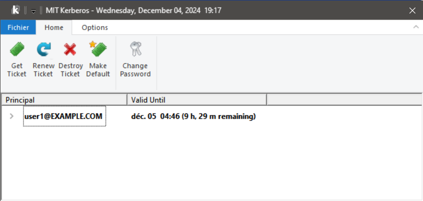

MIT Kerberos Ticket Manager
Home
Kerberos
Server Configuration
MIT Ticket Manager
Client Configuration
Managing Tickets
The MIT Ticket Manager allows you to view and manage Kerberos tickets effectively:
